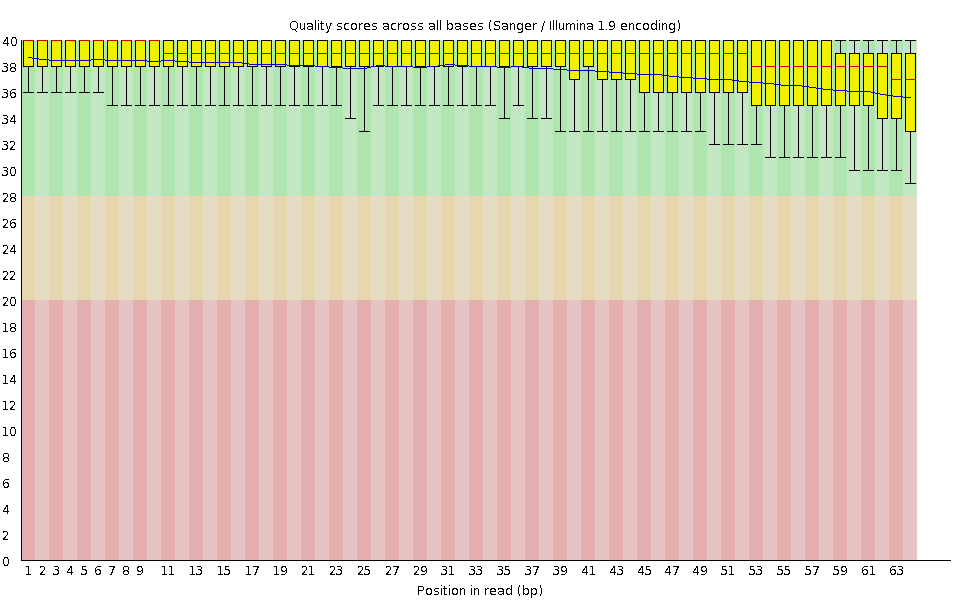
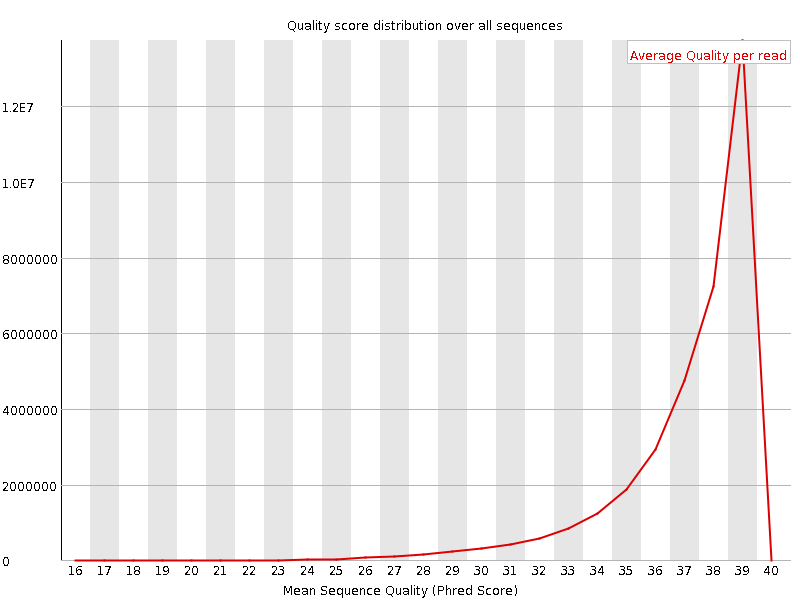
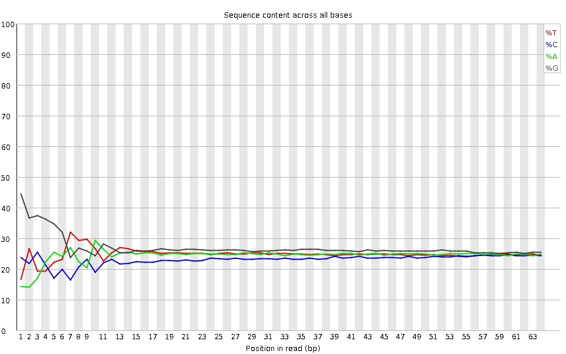
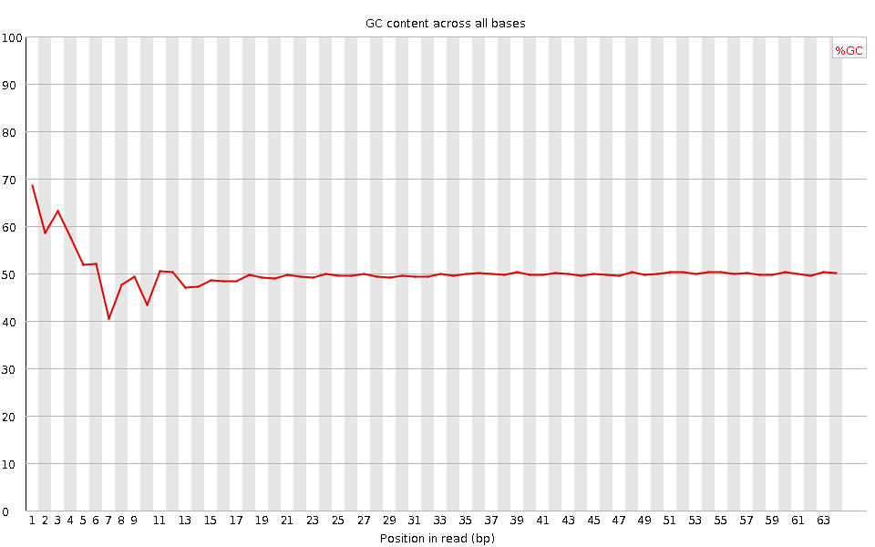
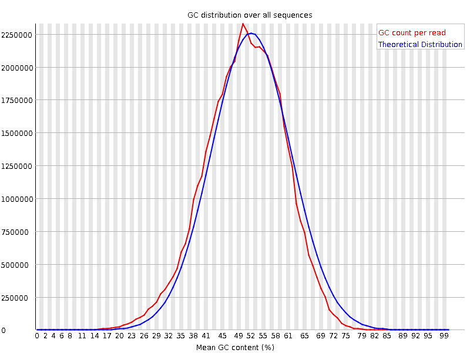
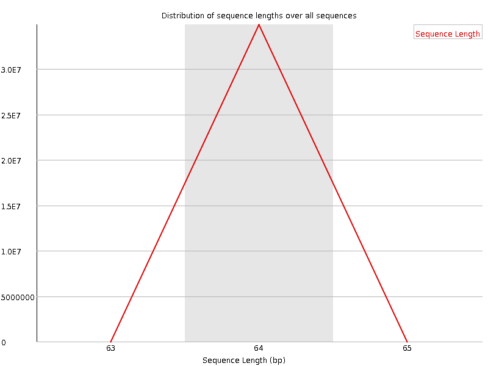
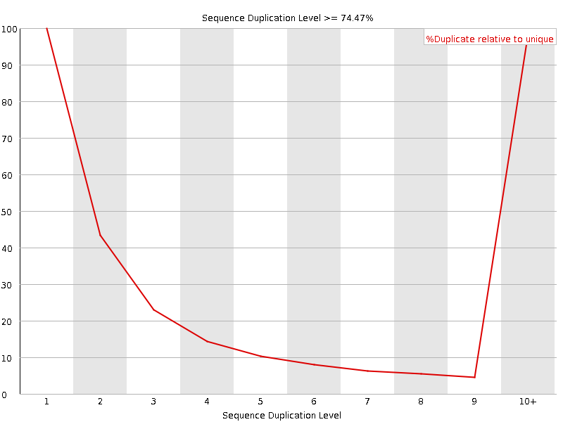
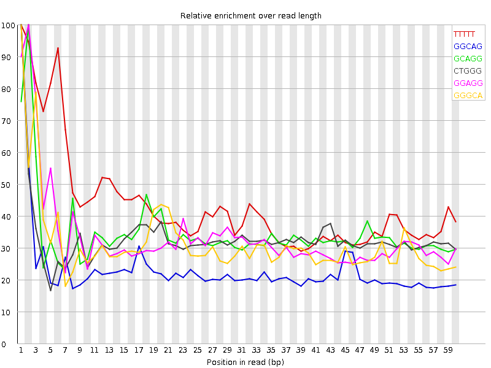

![[OK]](Icons/tick.png) Basic Statistics
Basic Statistics
| Measure | Value |
|---|---|
| Filename | SRR307899_pe_1.f.fastq |
| File type | Conventional base calls |
| Encoding | Sanger / Illumina 1.9 |
| Total Sequences | 34857255 |
| Filtered Sequences | 0 |
| Sequence length | 64 |
| %GC | 50 |
Per base sequence quality

Per sequence quality scores

![[FAIL]](Icons/error.png) Per base sequence content
Per base sequence content

Per base GC content

Per sequence GC content

Per base N content

Sequence Length Distribution

Sequence Duplication Levels

![[WARN]](Icons/warning.png) Overrepresented sequences
Overrepresented sequences
| Sequence | Count | Percentage | Possible Source |
|---|---|---|---|
| GTATAATACTAAGTTGAGATGATATCATTTACGGGGGAAGGCGCTTTGTGAAGTAGGCCTTATT | 36638 | 0.10510867823642453 | No Hit |
| CGGGGAAACGCCATATCGGGGGCACCGATTATTAGGGGAACTAGTCAGTTGCCAAAGCCTCCGA | 35370 | 0.10147098502162606 | No Hit |
Kmer Content

| Sequence | Count | Obs/Exp Overall | Obs/Exp Max | Max Obs/Exp Position |
|---|---|---|---|---|
| TTTTT | 4610300 | 2.2470958 | 5.170275 | 1 |
| GGCAG | 5263945 | 2.2021286 | 9.565805 | 1 |
| GCAGG | 4887080 | 2.04447 | 5.9056487 | 2 |
| CTGGG | 4969850 | 2.0438483 | 6.2099495 | 1 |
| GGAGG | 5346445 | 1.9147879 | 5.707785 | 2 |
| GGGCA | 4570105 | 1.9118662 | 6.073822 | 1 |
| GGGAA | 4500610 | 1.7785604 | 5.116818 | 1 |
| GGGGA | 4685795 | 1.6781812 | 7.8864 | 1 |
| GGGAG | 4456430 | 1.596036 | 6.581294 | 1 |
| TGGGG | 4467900 | 1.5730157 | 5.6757636 | 2 |
| GGGGG | 4701995 | 1.5261458 | 7.24313 | 1 |
| GTGGG | 4285390 | 1.5087594 | 8.567037 | 1 |
| GGGTG | 4260145 | 1.4998711 | 5.23902 | 2 |
| GGGGT | 3856935 | 1.3579127 | 6.1388054 | 3 |
| CGGGG | 3043455 | 1.153869 | 7.5957437 | 1 |
| GCGGG | 1547280 | 0.58662224 | 5.0388823 | 1 |